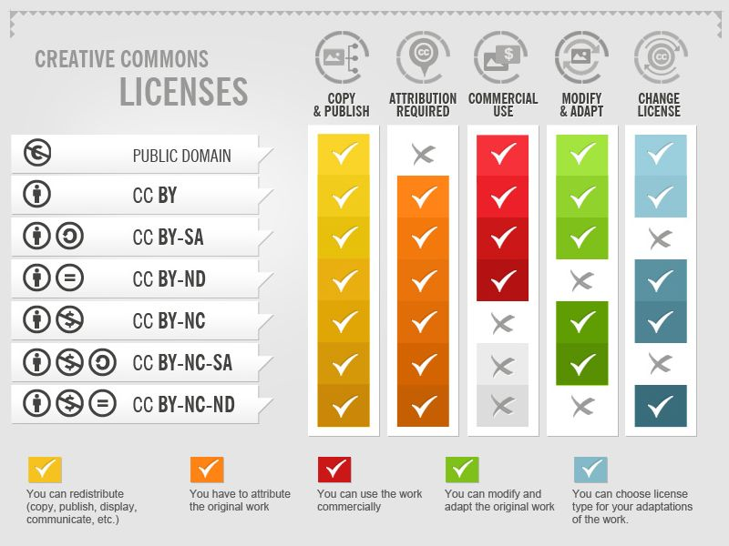
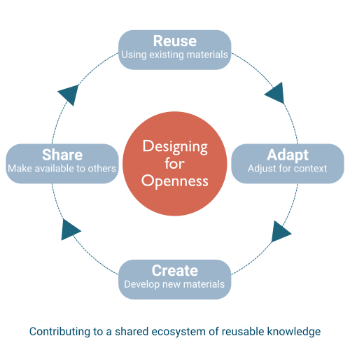

Teaching for Impact: Designing Effective & Open Training
Part 2
| 0:00 | Part 1 recap & framing |
| 0:10 | Exercise 1: Hidden Assumptions Audit |
| 0:45 | Licensing primer |
| 0:55 | Exercise 2: Evaluate, Then Decide |
| 1:30 | Break (20 min) |
| 1:50 | Exercise 3: Adaptation Deep Dive |
| 2:35 | Exercise 4: Stranger Test Swap |
| 3:05 | Closing reflection |
In Part 1, you designed training for your learners:
Questions? Anything that came up since last time?
Part 1 was about designing training for your learners.
Part 2 is about making those materials work for people who were not in the room when you designed them.
Think about the materials you designed in Part 1, or your existing course
Could a colleague pick them up and run the session without you?
Could you return in six months and remember why you sequenced things the way you did?
Remember the story about teaching women to make websites?
The instructions said "open a text editor" — and many participants didn't know what that meant.
The assumption was invisible to the people who wrote the materials.
Assumptions aren't problems. Invisible assumptions are.
25 min · Whole group
One team shares a piece of their training materials on screen. Everyone examines it together through three questions:
From all the assumptions we found:
What types of assumptions came up most?
Making assumptions visible is one of the simplest things you can do to support openness.
You've started seeing what your materials assume.
Before we evaluate other people's materials, we need to understand one more thing: what are you allowed to do with them?
A resource being freely available online does not mean you can modify or redistribute it.
By default, copyright reserves all rights to the creator.
Open licenses change that default — they say, in advance, "here is what you're allowed to do."

Four elements:

15 min · Own-team breakout
Pick one resource you brought from the pre-work (Step 5). Evaluate it using the six lenses:
For each lens, rate: green (works), amber (needs work), red (deal-breaker)
8 min · Own-team breakout (continue from Phase 1)
Based on your evaluation, make a decision:
Capture your decision alongside the evaluation.
What was the lens that surprised you most?
The one where you expected green but got amber or red?
How many teams chose…
Adaptation is the most common answer — and that's normal.
Back at [TIME]
20 minutes
You've evaluated a resource and decided to adapt it.
Now you turn that decision into concrete changes.
Most adaptations involve all three.
You don't need to change everything.
For each mismatch, decide:
35 min · Own-team breakout
Take the resource you decided to adapt in Exercise 2. Work through it section by section and identify:
For your most significant change, draft a brief note:
What was your team's most significant adaptation decision?
You've audited assumptions, evaluated resources, and planned adaptations.
Now: does your material actually work for someone who's never seen it?
Imagine a competent colleague in a different country, working in a related field, who has never met you. Can they understand what to do? Can they see why each activity matters? Can they adapt the materials without guessing at your intentions?
You're about to find out.
Each team selects one piece of their training materials — ideally the one you audited in Exercise 1.
Share it with a different team via screen-share or file share.
10 min · Cross-team breakout
Read through the other team's materials and try to answer:
10 min · Cross-team breakout
The reviewing team talks to the team that created the materials:
This is not a critique — it's a gift. You're hearing exactly what a stranger experiences.
5 min · Whole group
What was the most common gap — what did reviewers need that wasn't in the materials?
3 min · Individual reflection
Write down one specific thing you will change about your training materials based on today.
Not a vague intention — a concrete action.
"I will add a prerequisites note to my data cleaning activity."
"I will check the license on the dataset I've been using."
"I will rewrite my activity instructions so someone else could run them."
5 min · Own-team breakout
Each person shares their "one thing."
Are there common themes across the team?
Who wants to share their "one thing"?
What you've described is the beginning of this cycle — not a one-time fix.
Collect feedback. Notice what you had to explain. Update what confused people.
Your materials enter a cycle of use, feedback, and improvement.
That's what makes them open — not a license, but a practice.
Today was about seeing the full picture. The workbook is where you go deeper.
Teaching for Impact: Designing Effective & Open Training